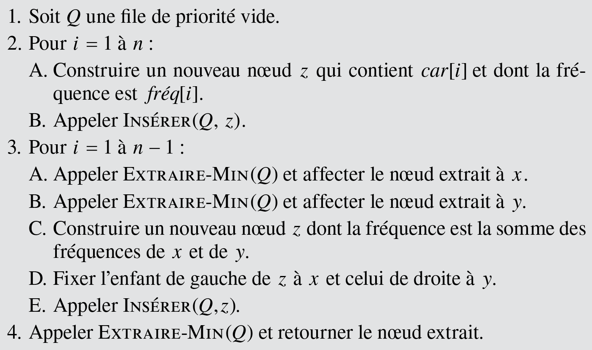

Cette séance a pour objet l’étude d’une méthode de compression de données inventée par David Albert Huffman en 1952. Cette méthode permet de réduire la longueur du codage d’un alphabet et repose sur la création d’un arbre binaire.
Différents types de codages
Dans la suite, nous utiliserons un alphabet composé seulement des 8 lettres A, B, C, D, E, F, G et H.
On cherche à coder chaque lettre de cet alphabet par une séquence de chiffres binaires.
-
Combien de bits sont nécessaires pour coder chacune des 8 lettres de l’alphabet ?
-
Quelle est la longueur en octets d’un message de 1 000 caractères construit sur cet alphabet ?
-
Proposer un code de taille fixe pour chaque caractère de l’alphabet de 8 lettres.
On considère maintenant le codage suivant, la longueur du code de chaque caractère étant variable.
| Lettre | A | B | C | D | E | F | G | H |
|---|---|---|---|---|---|---|---|---|
| Code | 10 | 001 | 000 | 1100 | 01 | 1101 | 1110 | 1111 |
-
En utilisant la table précédente, donner le code du message : CACHE.
-
Quel est le message correspondant au code 001101100111001.
Dans un texte, chacun des 8 caractères a un nombre d’apparitions différent. Cela est résumé dans le tableau suivant, construit à partir d’un texte de 1 000 caractères.
| Lettre | A | B | C | D | E | F | G | H |
|---|---|---|---|---|---|---|---|---|
| Nombre | 240 | 140 | 160 | 51 | 280 | 49 | 45 | 35 |
-
En utilisant le code de taille fixe proposé à la question 3., quelle est la longueur en bits du message contenant les 1 000 caractères énumérés dans le tableau précédent ?
-
En utilisant le code de la question 4., quelle est la longueur du même message en bits ?
Codage de Huffman
L’objectif du codage de Huffman est de trouver le codage proposé à la question 4.
Le codage de Huffman minimise la taille en nombre de bits du message codé en se basant sur le nombre d’apparition de chaque caractère (un caractère qui apparaît souvent aura un code plutôt court).
- Pour déterminer le code optimal, on considère 8 arbres, chacun réduit à une racine, contenant le symbole et son nombre d’apparitions.
- On fusionne ensuite les deux arbres contenant les plus petits nombres d’apparitions (valeur inscrite sur la racine), et on affecte à ce nouvel arbre la somme des nombres d’apparitions de ses deux sous-arbres. Lors de la fusion des deux arbres, le choix de mettre l’un ou l’autre à gauche n’a pas d’importance. Nous choisissons ici de mettre le plus fréquent à gauche (s’il y a un cas d’égalité, nous faisons un choix arbitraire).
- On recommence jusqu’à ce qu’il n’y ait plus qu’un seul arbre.
-
Combien d’étapes (combien de fusions d’arbres) sont nécessaires pour que cet algorithme se termine ?
-
En suivant l’algorithme précédent, construire l’arbre de Huffman.
Dans le cas de l’arbre ci-dessus le code de X est 00 (deux fois à gauche), le code de Y est 01, et celui de Z est 1.
-
Sur chaque arête de l’arbre construit à la question 10., inscrire 0 ou 1 selon que l’arête joint un fils gauche ou un fils droit.
-
Quel est le code de F ?
Le code suivant permet, à partir d’un fichier nommé texte.txt, de construire l’arbre de Huffman puis un dictionnaire qui associe à chaque caractère du fichier d’entrée son code sous forme d’une séquence de bits (liste de 0 et de 1).
Implémentation en Python de l’algorithme
- Écrire le code (et la spécification !) de la classe
Noeud, nœud d’un arbre binaire.
Par rapport à l’implémentation réalisée lors des TP précédenrs, ajouter le champlettreinitialisé à la chaîne de caractères vide et la méthode suivante :
def __lt__(self, n: Noeud):
"""
Comparaison de deux noeuds = comparaison des valeurs
"""
return self.valeur < n.valeur
-
Écrire les codes (et la spécification !) des fonctions
est_vide,est_feuille,parcours_prefixequi, respectivement teste si un nœud est vide, teste si un nœud est une feuille et finalement affiche l’arbre. -
Écrire le code de la fonction
creation_table_frequencesdont la spécification est
def creation_table_frequences(message: str) -> Dict[str, int]:
"""
Établit la table des fréquences des caractères dans message.
"""
Tester la fonction avec l’instruction :
assert creation_table_frequences("ABRACADABRA") == {'A': 5, 'B': 2, 'R': 2, 'C': 1, 'D': 1}
- Lire le document sur
les files de priorité
Écrire le code de la fonctionconstruction_arbre_huffmandont la spécification est
def construction_arbre_huffman(dic_frequences: Dict[str, int]) -> Noeud:
"""
Construction de l'arbre de Huffman.
"""
et l’algorithme (cf. Cormen, Algorithmes) 
-
Écrire une fonction (et la spécification !) nommée
encodagequi, étant donné un code de Huffman et le texte initial, retourne la chaîne de bits produite par le codage de Huffman. -
Écrire une fonction (et la spécification !) nommée
decodagequi, étant donné un code de Huffman et le texte compressé, retourne le message initial.